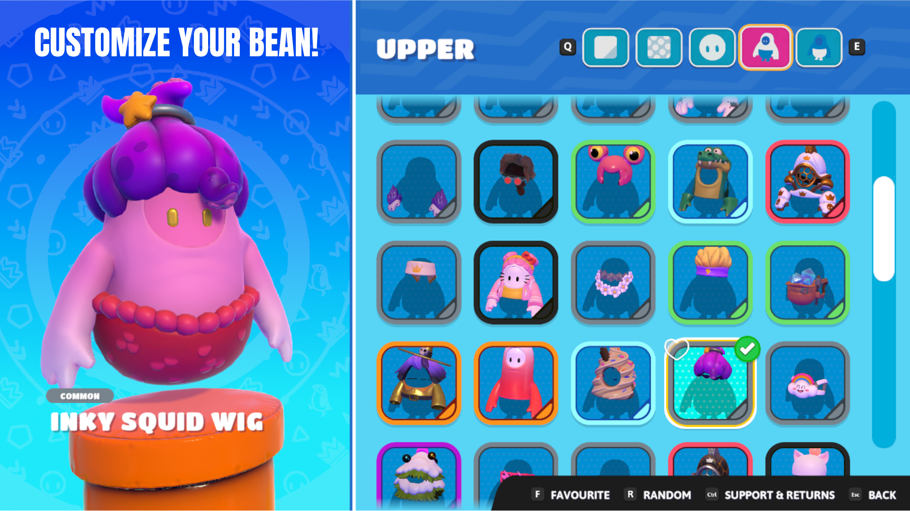
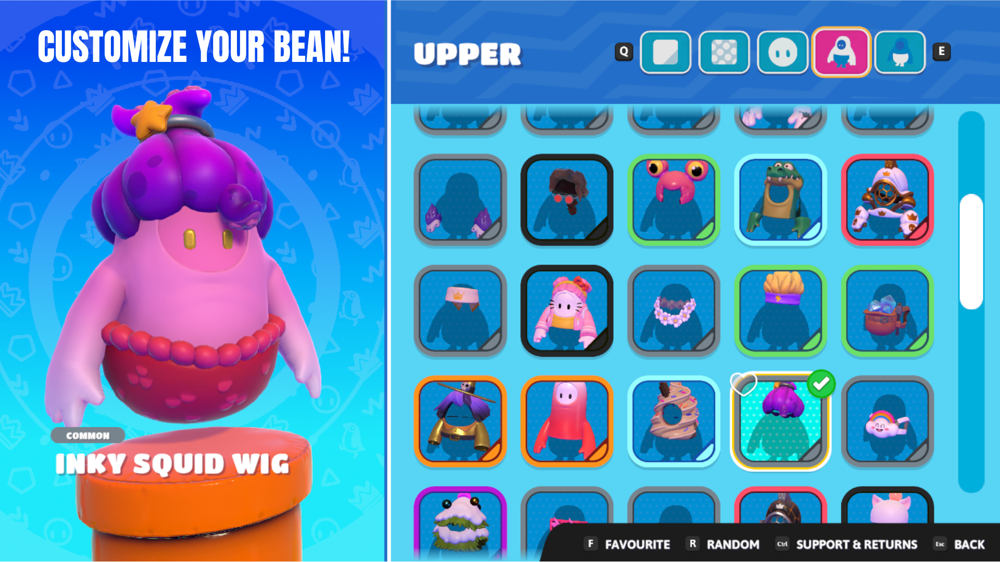
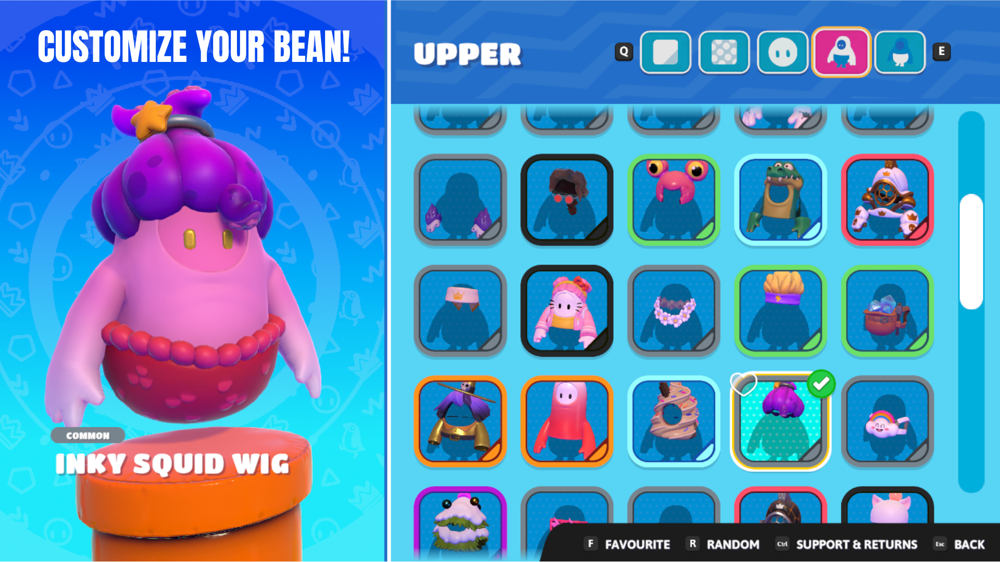
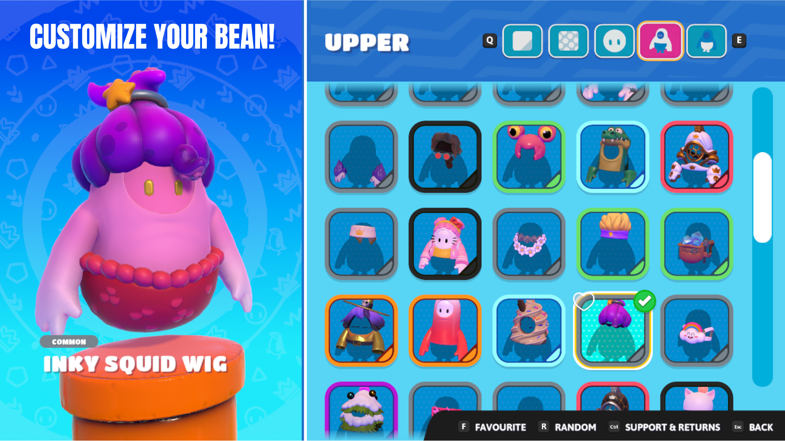

 

Fall Guys Creative is a level editor that allows you to create fiendish custom Rounds and share them with the wider community. The Blunderdome Construction Crew invites you to discover new ways to play Fall Guys with Fall Guys Creative!
Fall Guys Ultimate Knockout is a Indie game that is meant for anyone at any age. This game is a typical battle royal game we see today but instead of 100 people we see in other games its 60 and your goal is to compete in multiple rounds fill with fun mini games to reach to the finals to win a crown. What makes this game different then other battle royal is that its a party game not a shooter and gives the fan a fun experience to play either with family or friends to get a good laugh after a hard day of work or school. The fall guys are adorable little beans that you can change costumes whatever you fit good on you and updates with more outfits you can wish spend your kudos or crowns you win on games. Totally worth the try for those people who looking for a fun game to kill time and plus this game continue to come with more seasons so more minigames equal more fun trust me on this :)
As someone who usually isn't a fan of Battle Royales, this game had me hooked from the get-go. The bright colours and simplistic gameplay keep me hooked, as each round tends to balance skill and luck very well. A couple of the teamwork rounds can be tricky (unless you're in a party of friends) but overall this game is highly enjoyable and quite addictive! Often the competitive nature of the game would leave me frustrated only to find that frustration gone only a few moments later when I realise the absurdity of the game I'm playing. I'm looking forward to new seasons and hopefully, new maps/courses as the only con are that I can see this game ending up a bit repetitive after a while. Overall I would recommend this game to players of all ages and skill levels.
i have only played this game for today and it has been fantastic. i have been playing with my friends and we have had lots of banter. the game mechanics are simple, but using them correctly can lead to great success. the character customisation in this is great. right now i'm a pigeon and there is a battle pass where you can earn things. unlike fortnite, the battle pass is quite helpful and doesn't give you useless things like loading screens or emblems. instead, you get skins and costumes, money, or crowns which are higher forms of currency. i give this game 5 stars because even though it is simple and has been done many times before, i still enjoy it. great game!
I literally never play video games, in fact I typically make fun of people who play them so much, aaaaaaaand...now this has happened, oops! This game is so very much fun, it's so cute and is great for a chuckle, but is also a great competition! It's pretty much the perfect game, I love that you can mess with people but it's non-violent. The costumes and emotes are adorable....can't wait for new games to come out! It's kind of addictive, beware! :D
This game is pretty darn fun. The only flaws I see with it are that some of the games get pretty repetitive after a while, however soon that will not happen because the new season will bring forth new maps. People that say this game is bad is because they are bad at it. Some guy literally gave it 1 star because he didn't win... This game is impossible to be bad at. The physics are what evens everybody out. This game is suitable for everyone, and this seems like a game that I can come back to.